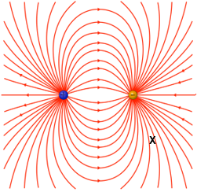

This worksheet has a lot of information; you will not need it all for each individual question. It’s okay if you need to go back and re-read to answer some of these questions.
Credit: Terry Gross
Figure 1: Pores on the snout of a shark. These pores lead to transparent tubes called the ampullae of Lorenzini. Credit: Alber Kok
Stefano Lorenzini, born in Florence in 1652, was a physician and ichthyologist. In 1678, he described the presence of pores leading to transparent tubes located around the mouths of sharks but for which he was unable to determine the purpose. This Italian scientist would never have imagined that these tubes, now called the ampullae of Lorenzini, allow sharks to perceive a world of electrical images that are imperceptible to human senses.
It was not until three hundred years later, in 1960, that this organ was finally identified as a specialized sense that perceives electric fields. It was then understood that these tubes offer a clear evolutionary advantage for the sea predators that have them. All living creatures produce an electric field when they contract their muscles. A shark can detect the weak electric stimuli from a prey and deduce its presence. How does this sixth sense function? What exactly is it capable of detecting?
The golden trout is a potential prey for sharks in the Pacific Ocean around the coasts of California in the USA. Although most trout live only in fresh water, some species, such as the golden trout (subspecies of rainbow trout) spend their adult life in the ocean and swim back up certain rivers in California to spawn, like salmon do. The golden trout can reach up to 71 cm long and weigh 5 kg in adulthood, so they make a very interesting meal for many sharks.
Figure 2: Adult golden trout. Credit: Citron / CC-BY-SA-3.0
In this problem, you will have to describe the electric field produced by the beating of a trout’s heart and understand its role in relation to the shark’s electroreception sense. To help you understand the phenomenon, a trout, an aquarium, an electrocardiograph and lots of questions will be presented.
The main idea: Evaluating the potential difference across and around an electric field source.
As you read the information below, list all the relevant information you gathered when you read the problem. Based on this information, state what you need to know to solve the problem. As you discover new information, you should summarize and update the relevant information you have gathered and ask new questions.
1) The vectors in the figure below represent the electric field of a point charge. Between which of the points represented here by the letters A, B, C, D, E and F is the modulus of the potential difference the highest? The lowest?
Figure 3: Electric field of a point charge.
You can use the PhET simulation below to recreate the diagram and help you check your work.
With the text entry boxes below, please keep in mind that your answers are sensitive to capitalization and extra spaces. This question cares only about the magnitude of the voltage, so the order of your responses does not matter. (highest): Between points and
(lowest): Between points and
2) Figure 4 shows the field lines representing the electric field of a dipole made up of point charges. Using these field lines, draw or describe the location of the equipotential lines.
Figure 4: Electric field lines of an electric dipole
You may find this PhET simulation useful again.
3) In Figure 4, at point X:
Figure 5: Assembly to measure the beating of a 16-cm brook trout’s heart
Some sharks are more sensitive to electric fields than any other animal, because they have a sensitivity threshold of up to 0.5 μV/m.
Using an electrocardiograph, it is possible to measure the size of the electric field generated by a trout. For this experiment, a trout is placed in an aquarium. Then two sensors connected to an electrocardiograph are submerged in the aquarium near the trout as shown in Figure 5. The electrocardiograph records the signal in millivolts (mV) and it measures the electrical potential difference between the two sensors, as shown in Figure 6.
To simplify the model, we use an electric dipole to represent the muscular contraction of the trout’s heart. When the potential difference generated by the trout is the highest, the distance between the point charges of the dipole representing the system is 1 cm, the size of the trout’s heart, as shown in Figure 7
Figure 6: Electrical potential difference measured at Points A and B by the sensors shown in Figure 7. This is the beating of a brook trout’s heart recorded when the trout is in the position shown in Figure 7.
Figure 7: Scale drawing of trout seen from above in the aquarium when the measurement is taken by the electrocardiograph. The positions of sensors A and B and the electric dipole representing the heart are all shown.
An electric field does not behave exactly the same way in vacuum as in water. The dielectric permittivity of a substance, , is the factor by which the electric field is decreased or increased relative to vacuum. At low frequencies, at room temperature and at a certain level of salinity, the dielectric permittivity of water has a value of 80.
Electric field of a dielectric:
where is the modulus of the electric field in the dielectric and is the modulus of the electric field in vacuum.
Therefore we can assume that Coulomb’s constant in vacuum, , will differ based on the value of the dielectric permittivity.
1) What is the value of the maximum electric charge accumulated in the dipole representing the trout’s heart? Coulombs
2) What is the maximum distance at which a shark can detect the electric signal emitted by the trout’s heart if the predator is at a point on an axis passing through the centre of the heart? Assume the axis is parallel to the x-axis in Figure 7. cm
3) During the experiment to measure the beating of the trout’s heart, would it be useful to put the aquarium in a wire mesh cage? Explain your answer.
The input will take a yes or no value but not an explanation. Please do not include punctuation in your answer.